4.1 Chebyshev series and interpolants
Chebfun is founded on the mathematical subject of approximation theory, and in particular, on Chebyshev series and interpolants. (For periodic analogues and trigonometric approximations, see Chapter 11.) Conversely, it provides a simple environment in which to demonstrate these approximants and other approximation ideas.
The history of "Chebyshev technology" goes back to the 19th century Russian mathematician Pafnuty Chebyshev (1821-1894) and his mathematical descendants such as Zolotarev and Bernstein (1880-1968). These men realized that just as Fourier series provide an efficient way to represent a smooth periodic function, series of Chebyshev polynomials can do the same for a smooth nonperiodic function. A number of excellent textbooks and monographs have been published on approximation theory, including [Davis 1963], [Cheney 1966], [Meinardus 1967], [Lorentz 1986], and [Powell, 1981], and in addition there are books devoted entirely to Chebyshev polynomials, including [Rivlin 1974] and [Mason & Handscomb 2003]. A Chebfun-based book on approximation theory and its computational applications is particularly relevant for Chebfun users [Trefethen 2013].
From the dates of publication above it will be clear that approximation theory flourished in the early computer era, and in the 1950s and 1960s a number of numerical methods were developed based on Chebyshev polynomials by Lanczos [Lanczos 1957], Fox [Fox & Parker 1966], Clenshaw, Elliott, Mason, Good, and others. The Fast Fourier Transform came in 1965 and Salzer's barycentric interpolation formula for Chebyshev points in 1972 [Salzer 1972]. Then in the 1970s Orszag and Gottlieb introduced spectral methods, based on the application of Chebyshev and Fourier technology to the solution of PDEs. The subject grew rapidly, and it is in the context of spectral methods that Chebyshev techniques are particularly well known today [Boyd 2001], [Trefethen 2000], [Canuto et al. 2006/7].
We must be clear about terminology. We shall rarely use the term Chebyshev approximation, for that expression refers specifically to an approximation that is optimal in the minimax sense. Chebyshev approximations are fascinating, and in Section 4.6 we shall see that Chebfun makes it easy to compute them, but the core of Chebfun is built on the different techniques of polynomial interpolation in Chebyshev points and expansion in Chebyshev polynomials. These approximations are not quite optimal, but they are nearly optimal and much easier to compute.
By Chebyshev points we shall mean the set of points in $[-1,1]$ defined by $$ x_j = -\cos(j \pi/N), ~~ 0 \le j \le N, $$ where $N\ge 1 $ is an integer. (If $N=0$, we take $x_0=0$.) A fuller name is that these are Chebyshev points of the second kind. (Chebfun also enables computations based on Chebyshev points of the first kind; see Section 8.9.) Through any data values $f_j$ at these points there is a unique polynomial interpolant $p(x)$ of degree $\le N$, which we call the Chebyshev interpolant. In particular, if the data are $f_j = (-1)^{n-j}$, then $p(x)$ is $T_N(x)$, the degree $N$ Chebyshev polynomial, which can also be defined by the formula $T_N(x) = \cos(N \cos^{-1}(x))$. In Chebfun, the command chebpoly(N) returns a chebfun corresponding to $T_N$, and poly returns coefficients in the monomial basis $1,x,x^2,\dots.$ Thus we can print the coefficients of the first few Chebyshev polynomials like this:
for N = 0:8
disp(poly(chebpoly(N)))
end
1
1 0
2 0 -1
4 0 -3 0
8 0 -8 0 1
16 0 -20 0 5 0
32 0 -48 0 18 0 -1
64 0 -112 0 56 0 -7 0
128 0 -256 0 160 0 -32 0 1
Note that the output of poly follows the pattern for MATLAB's standard poly command: it is a row vector, and the high-order coefficients come first. Thus, for example, the fourth row above tells us that $T_3(x) = 4x^3 - 3x$.
Here are plots of $T_2$, $T_3$, $T_{15}$, and $T_{50}$.
subplot(2,2,1), plot(chebpoly(2)), ylim([-1.5 1.5]) subplot(2,2,2), plot(chebpoly(3)), ylim([-1.5 1.5]) subplot(2,2,3), plot(chebpoly(15)), ylim([-1.5 1.5]) subplot(2,2,4), plot(chebpoly(50)), ylim([-1.5 1.5])
A Chebyshev series is an expansion $$ f(x) = \sum_{k=0}^\infty a_k T_k(x), $$ and the $a_k$ are known as Chebyshev coefficients. So long as $f$ is continuous and at least a little bit smooth (Lipschitz continuity is enough), it has a unique expansion of this form, which converges absolutely and uniformly, and the coefficients are given by the integral $$ a_k = {2\over \pi} \int_{-1}^1 {f(x) T_k(x) dx \over \sqrt{1-x^2}} $$ except that for $k=0$, the constant changes from $2/\pi$ to $1/\pi$. One way to approximate a function is to form the polynomials obtained by truncating its Chebyshev expansion, $$ f_N(x) = \sum_{k=0}^N a_k T_k(x). $$ This isn't quite what Chebfun does, however, since it does not compute exact Chebyshev coefficients. Instead Chebfun constructs its approximations via Chebyshev interpolants, which can also be regarded as finite series in Chebyshev polynomials for some coefficients $c_k$: $$ p_N(x) = \sum_{k=0}^N c_k T_k(x). $$ Each coefficient $c_k$ will converge to $a_k$ as $N\to\infty$ (apart from the effects of rounding errors), but for finite $N$, $c_k$ and $a_k$ are different. Chebfun versions 1-4 stored functions via their values at Chebyshev points, whereas version 5 switched to Chebyshev coefficients, but this hardly matters to the user, and both representations are exploited for various purposes internally in the system.
4.2 chebcoeffs and poly
We have just seen that the command chebpoly(N) returns a chebfun corresponding to the Chebyshev polynomial $T_N$. Conversely, if f is a chebfun, then chebcoeffs(f) is the vector of its Chebyshev coefficients. (Before version 5, the command for this was chebpoly.) For example, here are the Chebyshev coefficients of $x^3$:
x = chebfun(@(x) x); c = chebcoeffs(x^3)
c =
0
0.750000000000000
0
0.250000000000000
Unike poly, chebcoeffs returns a column vector with the low-order coefficients first. Thus this computation reveals the identity $x^3 = (1/4)T_3(x) + (3/4)T_1(x)$.
If we apply chebcoeffs to a function that is not "really" a polynomial, we will usually get a vector whose last entry (i.e., highest order) is just above machine precision. This reflects the adaptive nature of the Chebfun constructor, which always seeks to use a minimal number of points.
chebcoeffs(sin(x))
ans =
0
0.880101171489867
0
-0.039126707965337
0
0.000499515460422
0
-0.000003004651635
0
0.000000010498500
0
-0.000000000023960
0
0.000000000000039
Of course, machine precision is defined relative to the scale of the function:
chebcoeffs(1e100*sin(x))
ans =
1.0e+99 *
0
8.801011714898671
0
-0.391267079653368
0
0.004995154604225
0
-0.000030046516349
0
0.000000104985004
0
-0.000000000239601
0
0.000000000000385
By using poly we can print the coefficients of such a chebfun in the monomial basis. Here for example are the coefficients of the Chebyshev interpolant of $\exp(x)$ compared with the Taylor series coefficients:
cchebfun = flipud(poly(exp(x)).');
ctaylor = 1./gamma(1:length(cchebfun))';
disp(' chebfun Taylor')
disp([cchebfun ctaylor])
chebfun Taylor 1.000000000000000 1.000000000000000 1.000000000000002 1.000000000000000 0.500000000000000 0.500000000000000 0.166666666666600 0.166666666666667 0.041666666666662 0.041666666666667 0.008333333333954 0.008333333333333 0.001388888889005 0.001388888888889 0.000198412695834 0.000198412698413 0.000024801586720 0.000024801587302 0.000002755737384 0.000002755731922 0.000000275574391 0.000000275573192 0.000000025045981 0.000000025052108 0.000000002086529 0.000000002087676 0.000000000164047 0.000000000160590 0.000000000011937 0.000000000011471
The numbers disagree in the last four digits, even though the functions represented in the two columns agree almost to full precision. This reflects the ill-conditioning of the monomial basis for representing functions on an interval.
4.3 chebfun(...,N) and the Gibbs phenomenon
The two columns represent monomial coefficients of two functions that agree to 15 or 16 digits. The fact that the numbers differ in the final four decimal places reflects the ill-conditioning of monomials as a basis for representing functions on an interval.
Let us begin with a function that cannot be well approximated by polynomials, the step function sign($x$). To start with we interpolate it in $10$ or $20$ points, taking $N$ to be even to avoid including a value $0$ at the middle of the step.
f = chebfun('sign(x)',10);
MS = 'markersize';
subplot(1,2,1), plot(f,'.-',MS,8), grid on
f = chebfun('sign(x)',20);
subplot(1,2,2), plot(f,'.-',MS,8), grid on
There is an overshoot problem here, known as the Gibbs phenomenon, that does not go away as $N\to\infty$. We can zoom in on the overshoot region by resetting the axes:
subplot(1,2,1), axis([0 .8 .5 1.5]) subplot(1,2,2), axis([0 .4 .5 1.5])
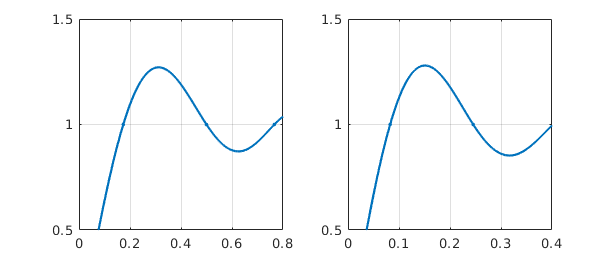
Here are analogous results with $N=100$ and $1000$.
f = chebfun('sign(x)',100);
subplot(1,2,1), plot(f,'.-',MS,8), grid on, axis([0 .08 .5 1.5])
f = chebfun('sign(x)',1000);
subplot(1,2,2), plot(f,'.-',MS,8), grid on, axis([0 .008 .5 1.5])
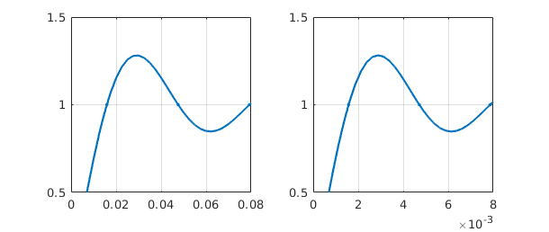
What is the amplitude of the Gibbs overshoot for Chebyshev interpolation of a step function? We can find out by using max:
for N = 2.^(1:8)
gibbs = max(chebfun('sign(x)',N));
fprintf('%5d %13.8f\n', N, gibbs)
end
2 1.00000000
4 1.18807518
8 1.26355125
16 1.27816423
32 1.28131717
64 1.28204939
128 1.28222585
256 1.28226917
This gets a bit slow for larger $N$, but knowing that the maximum occurs around $x = 3/N$, we can speed it up by using Chebfun's { } notation to work on subintervals:
for N = 2.^(4:12)
f = chebfun('sign(x)',N);
fprintf('%5d %13.8f\n', N, max(f{0,5/N}))
end
16 1.27816423 32 1.28131717 64 1.28204939 128 1.28222585 256 1.28226917 512 1.28227990 1024 1.28228257 2048 1.28228323 4096 1.28228340
The overshoot converges to a number $1.282283455775\dots$ [Helmberg & Wagner 1997].
4.4 Smoothness and rate of convergence
The central dogma of approximation theory is this: the smoother the function, the faster the convergence as $N\to\infty$. What this means for Chebfun is that so long as a function is twice continuously differentiable, it can usually be approximated to machine precision for a workable value of $N$, even without subdivision of the interval.
After the step function, a function with "one more derivative" of smoothness would be the absolute value. Here if we interpolate in $N$ points, the errors decrease at the rate $O(N^{-1})$. For example:
clf
f10 = chebfun('abs(x)',10);
subplot(1,2,1), plot(f10,'.-',MS,8), ylim([0 1]), grid on
f20 = chebfun('abs(x)',20);
subplot(1,2,2), plot(f20,'.-',MS,8), ylim([0 1]), grid on
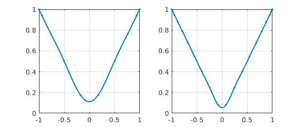
Chebfun has no difficulty computing interpolants of much higher order:
f100 = chebfun('abs(x)',100);
subplot(1,2,1), plot(f100), ylim([0 1]), grid on
f1000 = chebfun('abs(x)',1000);
subplot(1,2,2), plot(f1000), ylim([0 1]), grid on
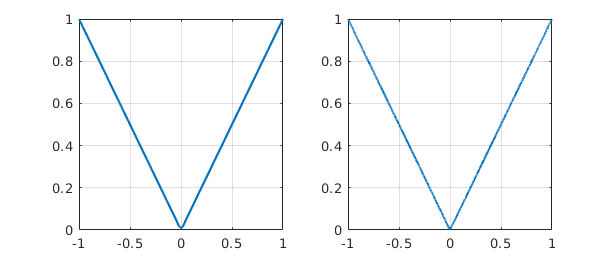
Such plots look good to the eye, but they do not achieve machine precision. We can confirm this by using splitting on to compute a true absolute value and then measuring some norms.
fexact = chebfun('abs(x)','splitting','on');
err10 = norm(f10-fexact,inf)
err100 = norm(f100-fexact,inf)
err1000 = norm(f1000-fexact,inf)
err10 = 0.111111111111111 err100 = 0.010101010101010 err1000 = 0.001001001001002
Notice the clean linear decrease of the error as N increases.
If $f$ is a bit smoother, polynomial approximation to machine precision becomes practical:
length(chebfun('abs(x)*x'))
length(chebfun('abs(x)*x^2'))
length(chebfun('abs(x)*x^3'))
length(chebfun('abs(x)*x^4'))
ans =
65537
ans =
1259
ans =
694
ans =
387
Of course, these particular functions would be easily approximated by piecewise smooth chebfuns.
It is interesting to plot convergence as a function of $N$. Here is an example from [Battles & Trefethen 2004] involving the next function from the sequence above.
s = 'abs(x)^5';
exact = chebfun(s,'splitting','off');
NN = 1:100; e = [];
for N = NN
e(N) = norm(chebfun(s,N)-exact);
end
clf
subplot(1,2,1)
loglog(e), ylim([1e-10 10]), title('loglog scale')
hold on, loglog(NN.^(-5),'--r'), grid on
text(6,4e-7,'N^{-5}','color','r','fontsize',16)
subplot(1,2,2)
semilogy(e), ylim([1e-10 10]), grid on, title('semilog scale')
hold on, semilogy(NN.^(-5),'--r'), grid on
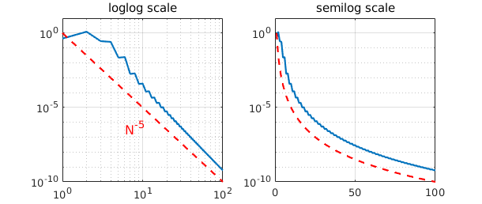
The figure reveals very clean convergence at the rate $N^{-5}$. According to Theorem 2 of the next section, this happens because $f$ has a fifth derivative of bounded variation.
Here is an example of a smoother function, one that is in fact analytic. According to Theorem 3 of the next section, if $f$ is analytic, its Chebyshev interpolants converge geometrically. In this example we take $f$ to be the Runge function, for which interpolants in equally spaced points would not converge at all (in fact they diverge exponentially -- see Section 4.7).
s = '1/(1+25*x.^2)';
exact = chebfun(s);
for N = NN
e(N) = norm(chebfun(s,N)-exact);
end
clf, subplot(1,2,1)
loglog(e), ylim([1e-10 10]), grid on, title('loglog scale')
c = 1/5 + sqrt(1+1/25);
hold on, loglog(c.^(-NN),'--r'), grid on
subplot(1,2,2)
semilogy(e), ylim([1e-10 10]), title('semilog scale')
hold on, semilogy(c.^(-NN),'--r'), grid on
text(45,1e-3,'C^{-N}','color','r','fontsize',16)
This time the convergence is equally clean but quite different in nature. Now the straight line appears on the semilogy axes rather than the loglog axes, revealing the geometric convergence.
4.5 Five theorems
The mathematics of Chebfun can be captured in five theorems about interpolants in Chebyshev points. The first three can be found in [Battles & Trefethen 2004], and all are discussed in [Trefethen 2013]. Let $f$ be a continuous function on $[-1,1]$, and let $p$ denote its interpolant in $N$ Chebyshev points and $p^*$ its best degree $N$ approximation with respect to the maximum norm $|\cdot|$.
The first theorem asserts that Chebyshev interpolants are "near-best" [Ehlich & Zeller 1966].
THEOREM 1. $$ |f-p| \le (2+(2/\pi)\log(N)) |f-p^*|. $$
This theorem implies that even if $N$ is as large as 100,000, one can lose no more than one digit by using $p$ instead of $p^*$. Whereas Chebfun will readily compute such a $p$, it is unlikely that anybody has ever computed a nontrivial $p^*$ for a value of $N$ so large.
The next theorem asserts that if $f$ is $k$ times differentiable, roughly speaking, then the Chebyshev interpolants converge at the algebraic rate $1/N^k$ [Mastroianni & Szabados 1995].
THEOREM 2. Let $f, f',\dots , f^{(k-1)}$ be absolutely continuous for some $k \ge 1$, and let $f^{(k)}$ be a function of bounded variation. Then $|f-p| = O(N^{-k})$ as $N \to\infty$.
Smoother than this would be a $C^\infty$ function, i.e. infinitely differentiable, and smoother still would be a function analytic on $[-1,1]$, i.e., one whose Taylor series at each point of $[-1,1]$ converges at least in a small neighborhood of that point. For analytic functions the convergence is geometric. The essence of the following theorem is due to Bernstein in 1912, though it is not clear where an explicit statement first appeared in print.
THEOREM 3. If $f$ is analytic and bounded in the "Bernstein ellipse" of foci $1$ and $-1$ with semimajor and semiminor axis lengths summing to $r$, then $|f-p| = O(r^{-N})$ as $N \to\infty$.
More precisely, if $|f(z)|\le M$ in the ellipse, then the bound on the right can be taken as $4Mr^{-n}/(r-1)$.
For a startling illustration of the implications of this theory, consider these two functions from the Chebfun gallery. Theorem 3 can be used to explain why their lengths are so different.
subplot(2,1,1), cheb.gallery('sinefun1'), ylim([0 3.5])
subplot(2,1,2), cheb.gallery('sinefun2'), ylim([0 3.5])
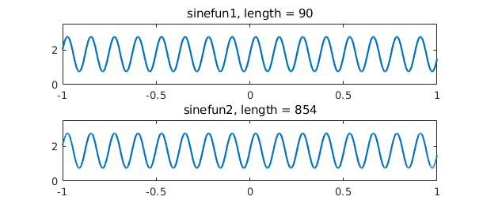
The next theorem asserts that Chebyshev interpolants can be computed by the barycentric formula [Salzer 1972]. The summation with a double prime denotes the sum from $k=0$ to $k=N$ with both terms $k=0$ and $k=N$ multiplied by $1/2$.
THEOREM 4. $$ p(x) = \sum_{k=0}^N \mbox{''} {(-1)^k f(x_k)\over x-x_k} \left/ \sum_{k=0}^N \mbox{''}{(-1)^k\over x-x_k}. \right. $$
See [Berrut & Trefethen 2005] and [Trefethen 2013] for information about barycentric interpolation.
The final theorem asserts that the barycentric formula has no difficulty with rounding errors. Our "theorem" is really just an advertisement; see [Higham 2004] for a precise statement and proof. Earlier work on this subject appeared in [Rack & Reimer 1982].
THEOREM 5. The barycentric formula of Theorem 4 is numerically stable.
This stability result may seem surprising when one notes that for $x$ close to $x_k$, the barycentric formula involves divisions by numbers that are nearly zero. Nevertheless it is provably stable. If $x$ is exactly equal to some $x_k$, then one bypasses the formula and returns the exact value $p(x) = f(x_k)$.
4.6 Best approximations and the minimax command
For practical computations, it is rarely worth the trouble to compute a best (minimax) approximation rather than simply a Chebyshev interpolant. Nevertheless best approximations are a beautiful and well-established idea, and it is certainly interesting to be able to compute them. Chebfun makes this possible with the command minimax. For details, see [Filip, Nakatsukasa, Trefethen & Beckermann 2017].
For example, here is a function on the interval $[0,4]$ together with its best approximation by a polynomial of degree $20$:
f = chebfun('sqrt(abs(x-3))',[0,4],'splitting','on');
p = minimax(f,20);
clf, plot(f,'b',p,'r'), grid on
A plot of the error curve $(f-p)(x)$ shows that it equioscillates between $20+2 = 22$ alternating extreme values. Note that a second output argument from minimax returns the error as well as the polynomial.
[p,err] = minimax(f,20); plot(f-p,'m'), hold on plot([0 4],err*[1 1],'--k'), plot([0 4],-err*[1 1],'--k') ylim(3*err*[-1,1])
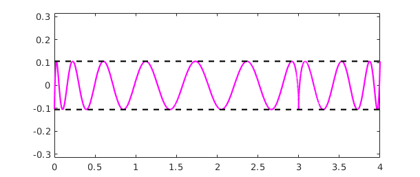
Let's add the error curve for the degree $20$ (i.e. $21$-point) Chebyshev interpolant to the same plot:
pinterp = chebfun(f,[0,4],21); plot(f-pinterp,'b')
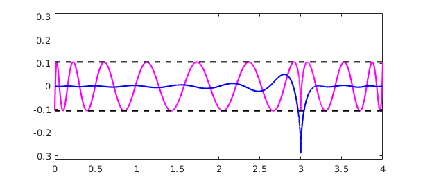
Notice that although the best approximation has a smaller maximum error, it is a worse approximation for most values of $x$.
Chebfun's minimax command can compute rational best approximants too, and it is probably the most robust code in existence for such approximations. If your function is smooth, another fast and robust approach to computing best approximations is Caratheodory-Fejer approximation, implemented in the code cf due to Joris Van Deun [Van Deun & Trefethen 2011]. For example:
f = chebfun('exp(x)');
[p,q] = cf(f,5,5);
r = p/q;
err = norm(f-r,inf);
clf, plot(f-r,'c'), hold on
plot([-1 1],err*[1 1],'--k'), plot([-1 1],-err*[1 1],'--k')
ylim(2e-13*[-1 1])
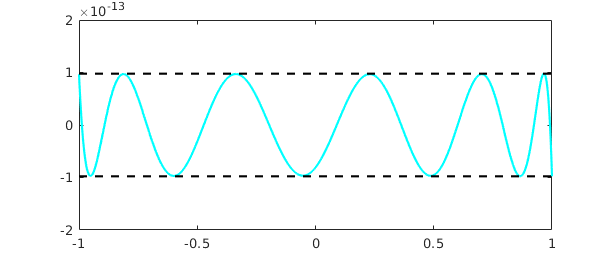
CF approximation often comes close to optimal for non-smooth functions too, provided you specify a fourth argument to tell the system which Chebyshev grid to use:
f = abs(x-.3); [p,q,r_handle,lam] = cf(f,5,5,300); clf, plot(f-p/q,'c'), hold on plot([-1 1],lam*[1 1],'--k'), plot([-1 1],-lam*[1 1],'--k')
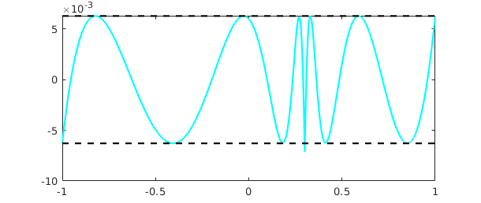
For a further indication of the power of this approach, see the Chebfun example "Digital filters via CF approximation".
4.7 The Runge phenomenon
Chebfun is based on polynomial interpolants in Chebyshev points, not equispaced points. It has been known for over a century that the latter choice is disastrous, even for interpolation of smooth functions [Runge 1901]. One should never use equispaced polynomial interpolants for practical work (unless you will only need the result near the center of the interval of interpolation), but like best approximations, they are certainly interesting.
In Chebfun, we can compute them with the interp1 command. For example, here is an analytic function and its equispaced interpolant of degree 9:
f = tanh(10*x); s = linspace(-1,1,10); p = chebfun.interp1(s,f(s)); hold off plot(f), hold on, plot(p,'r'), grid on, plot(s,p(s),'.r',MS,8)
Perhaps this doesn't look too bad, but here is what happens for degree $19$. Note the vertical scale.
s = linspace(-1,1,20); p = chebfun.interp1(s,f(s)); hold off plot(f), hold on, plot(p,'r'), grid on, plot(s,p(s),'.r',MS,8)
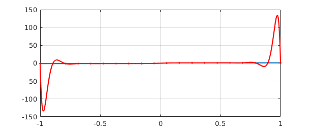
Approximation experts will know that one of the tools used in analyzing effects like this is the Lebesgue function associated with a given set of interpolation points. Chebfun has a command lebesgue for computing these functions. The problem with interpolation in $20$ equispaced points is reflected in a Lebesgue function of size $10^4$ -- note the semilog scale:
clf, semilogy(lebesgue(s))
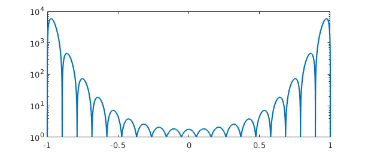
For $40$ points it is much worse:
semilogy(lebesgue(linspace(-1,1,40)))
As the degree increases, polynomial interpolants in equispaced points diverge exponentially, and no other method of approximation based on equispaced data can completely get around this problem [Platte, Trefethen & Kuijlaars 2011]. (Equispaced points are perfect for trigonometric interpolation of periodic functions, of course, accessible in Chebfun with the trig flag, as described in Chapter 11.)
4.8 Rational approximations
Chebfun contains five different programs, at present, for computing rational approximants to a function $f$. We say that a rational function is of type $(m,n)$ if it can be written as a quotient of one polynomial of degree at most $m$ and another of degree at most $n$.
To illustrate some of the possibilities, consider the function
f = chebfun('tanh(pi*x/2) + x/20',[-10,10]);
length(f)
plot(f)
ans = 356
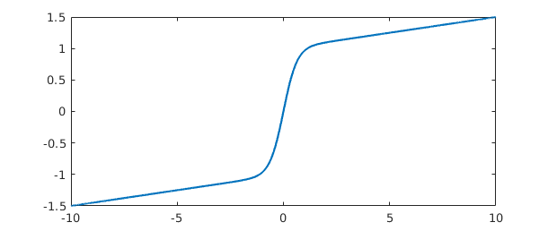
We can use the command chebpade, developed by Ricardo Pachon, to compute a Chebyshev-Pade approximant, defined by the condition that the Chebyshev series of $p/q$ should match that of $f$ as far as possible [Baker & Graves-Morris 1996]. (This is the so-called "Clenshaw-Lord" Chebyshev-Pade approximation; if the flag maehly is specified the code alternatively computes the linearized variation known as the "Maehly" approximation.) Chebyshev-Pade approximation is the analogue for functions defined on an interval of Pade approximation for functions defined in a neighborhood of a point.
[p,q] = chebpade(f,40,4); r = p/q;
The functions $f$ and $r$ match to about $8$ digits:
norm(f-r) plot(f-r,'r')
ans =
4.884633978946795e-09
Mathematically, $f$ has poles in the complex plane at $\pm i$, $\pm 3i$, $\pm 5i$, and so on. We can obtain approximations to these values by looking at the roots of $q$:
roots(q,'complex')
ans = 0.000000000000000 - 1.000000750727787i 0.000000000000000 + 1.000000750727787i 0.000000000000000 - 3.004284960232532i 0.000000000000000 + 3.004284960232532i
A similar but perhaps faster and more robust approach to rational interpolation is encoded in the command ratinterp, which computes a type $(m,n)$ interpolant through $m+n+1$ Chebyshev points (or, optionally, a different set of points). This capability was developed by Ricardo Pachon, Pedro Gonnet and Joris Van Deun [Pachon, Gonnet & Van Deun 2012]. The results are similar:
[p,q] = ratinterp(f,40,4); r = p/q; norm(f-r) plot(f-r,'m')
ans =
3.501473175645867e-07
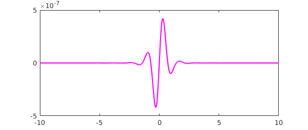
Again the poles are not bad:
roots(q,'complex')
ans = 0.000000000000000 - 1.000011081920813i 0.000000000000000 + 1.000011081920813i 0.000000000000000 - 3.010649201116677i 0.000000000000000 + 3.010649201116677i
The third and fourth options for rational approximation, as mentioned in Section 4.6, are best approximants computed by minimax and Caratheodory-Fejer approximants computed by cf [Trefethen & Gutknecht 1983, Van Deun & Trefethen 2011]. As mentioned in Section 4.6, CF approximants often agree with best approximations to machine precision if $f$ is smooth. We explore the same function yet again, and this time obtain an equioscillating error curve:
[p,q] = cf(f,40,4); r = p/q; norm(f-r) plot(f-r,'c')
ans =
2.999127738981362e-10

And the poles:
roots(q,'complex')
ans = 0.000000000000001 - 1.000000066684907i 0.000000000000001 + 1.000000066684907i -0.000000000004331 - 3.001936139263990i -0.000000000004331 + 3.001936139263990i
It is tempting to vary parameters and functions to explore more poles and what accuracy can be obtained for them. But rational approximation and analytic continuation are very big subjects and we shall resist the temptation. See Chapter 28 of [Trefethen 2013] and [Webb 2013]. Most important, see the fifth method available in Chebfun for computing rational approximants, the AAA ("adaptive Antoulas-Anderson) algorithm implemented in the code aaa. This is suitable for all kinds of real and complex approximations on real and complex domains. See the help text for aaa and [Nakatsukasa, Sete, and Trefethen 2016], where many examples are explored. Internally, the minimax command relies on methods related to AAA approximation.
4.9 References
[Baker and Graves-Morris 1996] G. A. Baker, Jr. and P. Graves-Morris, Pade Approximants, 2nd ed., Cambridge U. Press, 1996.
[Battles & Trefethen 2004] Z. Battles and L. N. Trefethen, "An extension of MATLAB to continuous functions and operators", SIAM Journal on Scientific Computing, 25 (2004), 1743-1770.
[Berrut & Trefethen 2005] J.-P. Berrut and L. N. Trefethen, "Barycentric Lagrange interpolation", SIAM Review, 46 (2004), 501-517.
[Boyd 2001] J. P. Boyd, Chebyshev and Fourier Spectral Methods, 2nd ed., Dover, 2001.
[Canuto et al. 2006/7] C. Canuto, M. Y. Hussaini, A. Quarteroni and T. A. Zang, Spectral Methods, 2 vols., Springer, 2006 and 2007.
[Cheney 1966] E. W. Cheney, Introduction to Approximation Theory, McGraw-Hill 1966 and AMS/Chelsea, 1999.
[Davis 1963] P. J. Davis, Interpolation and Approximation, Blaisdell, 1963 and Dover, 1975.
[Ehlich & Zeller 1966] H. Ehlich and K. Zeller, "Auswertung der Normen von Interpolationsoperatoren", Mathematische Annalen, 164 (1966), 105-112.
[Filip, Nakatsukasa, Trefethen & Beckermann 2017] S. Filip, Y. Nakatsukasa, L. N. Trefethen, and B. Beckermann, "Rational minimax approximations via adaptive barycentric representations," SIAM Journal on Scientific Computing, 40 (2018), A2427-A2455.
[Fox & Parker 1966] L. Fox and I. B. Parker, Chebyshev Polynomials in Numerical Analysis, Oxford U. Press, 1968.
[Helmberg & Wagner 1997] G. Helmberg & P. Wagner, "Manipulating Gibbs' phenomenon for Fourier interpolation", Journal of Approximation Theory, 89 (1997), 308-320.
[Higham 2004] N. J. Higham, "The numerical stability of barycentric Lagrange interpolation", IMA Journal of Numerical Analysis, 24 (2004), 547-556.
[Lanczos 1956] C. Lanczos, Applied Analysis, Prentice-Hall, 1956 and Dover, 1988.
[Lorentz 1986] G. G. Lorentz, The Approximation of Functions, American Mathematical Society, 1986.
[Mason & Handscomb 2003] J. C. Mason and D. C. Handscomb, Chebyshev Polynomials, CRC Press, 2003.
[Mastroianni & Szabados 1995] G. Mastroianni and J. Szabados, "Jackson order of approximation by Lagrange interpolation", Acta Mathematica Hungarica, 69 (1995), 73-82.
[Meinardus 1967] G. Meinardus, Approximation of Functions: Theory and Numerical Methods, Springer, 1967.
[Nakatsukasa, Sete & Trefethen 2016], The AAA algorithm for rational approximation, SIAM Journal on Scientific Computing, 40 (2018), A1494-A1522.
[Pachon, Gonnet & Van Deun 2012] R. Pachon, P Gonnet and J. Van Deun, "Fast and stable rational interpolation in roots of unity and Chebyshev points", SIAM Journal on Numerical Analysis, 50 (2011), 1713-1734.
[Platte, Trefethen & Kuijlaars 2011] R. P. Platte, L. N. Trefethen and A. B. J. Kuijlaars, "Impossibility of fast stable approximation of analytic functions from equispaced samples", SIAM Review, 53 (2011), 308-318.
[Powell 1981] M. J. D. Powell, Approximation Theory and Methods, Cambridge University Press, 1981.
[Rack & Reimer 1982] H.-J. Rack and M. Reimer, "The numerical stability of evaluation schemes for polynomials based on the Lagrange interpolation form", BIT Numerical Mathematics, 22 (1982), 101-107.
[Rivlin 1974] T. J. Rivlin, The Chebyshev Polynomials, Wiley, 1974 and 1990.
[Runge 1901] C. Runge, "Ueber empirische Funktionen und die Interpolation zwischen aequidistanten Ordinaten", Zeitschrift fuer Mathematik und Physik, 46 (1901), 224-243.
[Salzer 1972] H. E. Salzer, "Lagrangian interpolation at the Chebyshev points cos(nu pi/n), nu = 0(1)n; some unnoted advantages", Computer Journal, 15 (1972),156-159.
[Trefethen 2000] L. N. Trefethen, Spectral Methods in MATLAB, SIAM, 2000.
[Trefethen 2013] L. N. Trefethen, Approximation Theory and Approximation Practice, SIAM, 2013.
[Trefethen & Gutknecht 1983] L. N. Trefethen and M. H. Gutknecht, "The Caratheodory-Fejer method for real rational approximation", SIAM Journal on Numerical Analysis, 20 (1983), 420-436.
[Van Deun & Trefethen 2011] J. Van Deun and L. N. Trefethen, A robust implementation of the Caratheodory-Fejer method for rational approximation, BIT Numerical Mathematics, 51 (2011), 1039-1050.
[Webb 2013] M. Webb, "Computing complex singularities of differential equations with Chebfun", SIAM Undergraduate Research Online, 6 (2013), http://dx.doi.org/10.1137/12S011520.